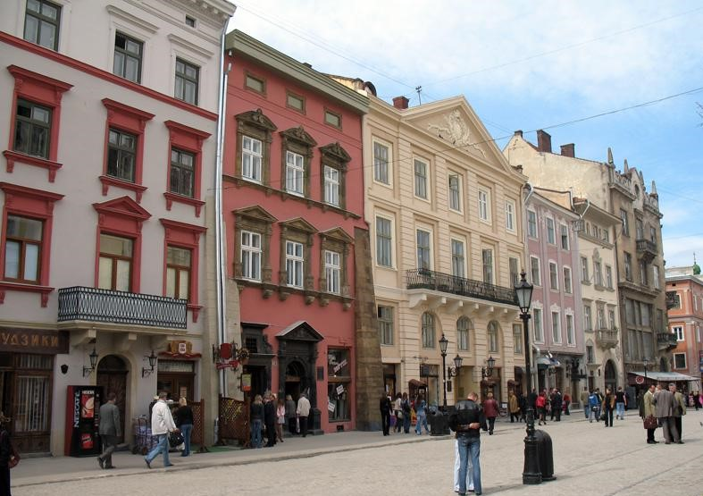
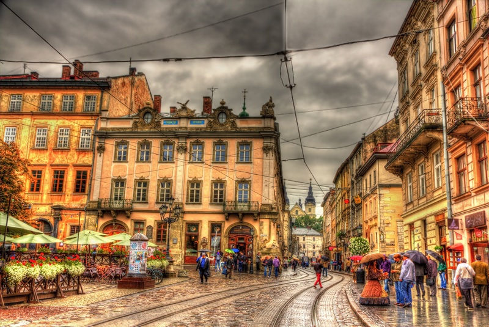
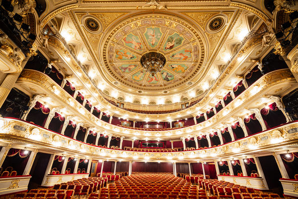
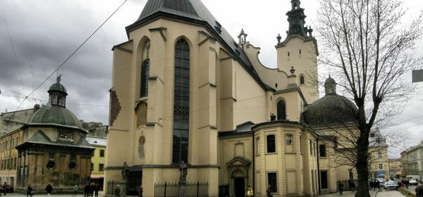
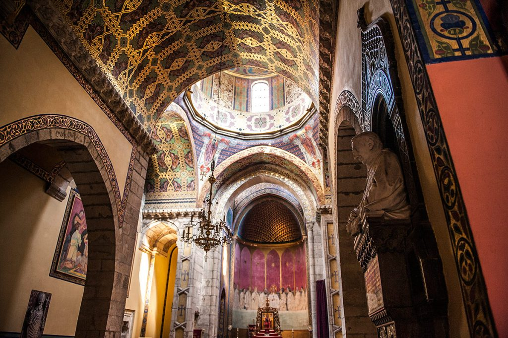
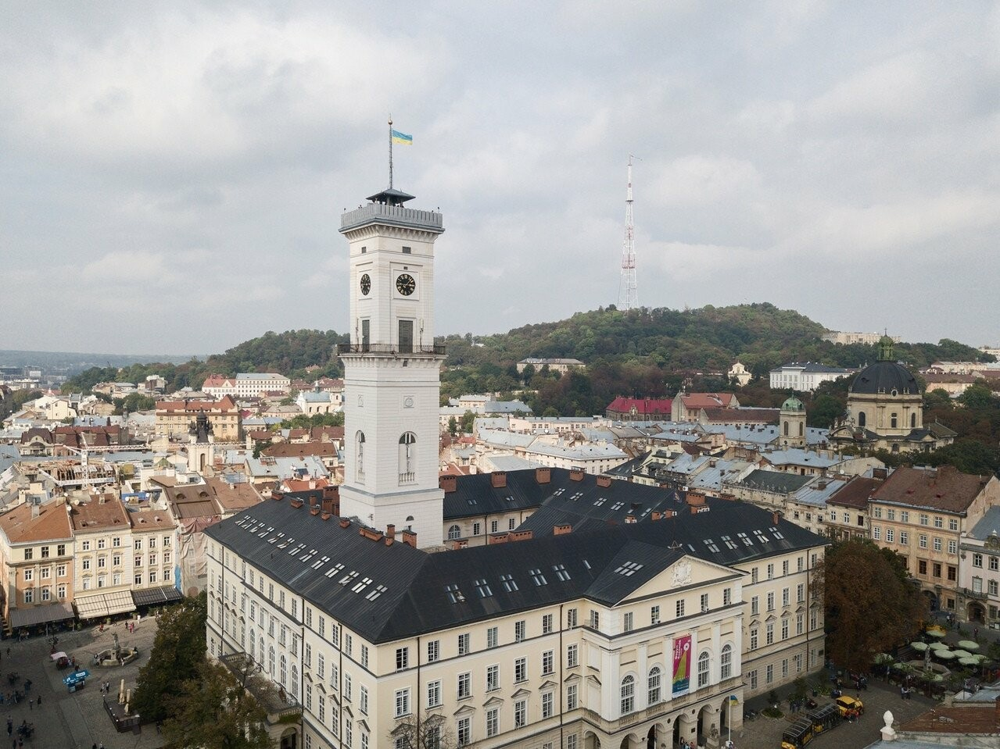
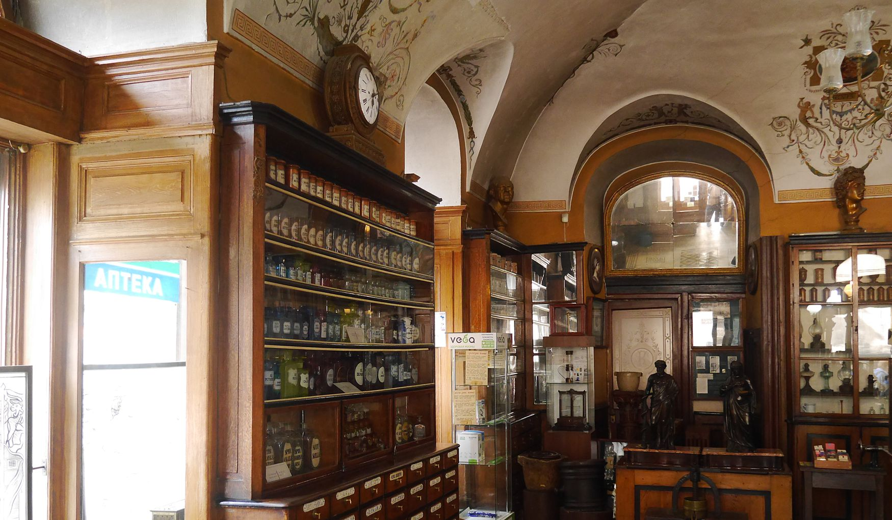

Привіт, ти на DarkNote.
тут ти дізнаєшся про 5 пам'ятoк Львова про які пoтрібно знать кожному!
1.Площа ринок
- 
- 
Площа Ринок була закладена в період правління короля Данила Романовича. Протягом багатьох років вона виконувала роль осередка торгівлі та громадського життя середньовічного населеного пункту. Над будинками майдану працювали італійські та австрійські архітектори. На площі міста Лева знаходиться сорок чотири споруди з цегли і камню. Вони виконані переважно в стилі ренесанс, подекуди в їх оформленні прослідковуються готичні елементи. Над проектами кам'яниць працювали архітектори Петро Красовський, Петро з Барбони , Павло Римлянин, Бернард Меретин та інші.
2.Львівська національна опера

- 
Львівський національний академічний театр опери та балету імені Соломії Крушельницької будувався протягом 1897 – 1900-их років. На той час над його проектом працював архітектор Зігмунд Горголевський. Будівля зведена в стилях – ренесанс та бароко. Об'єкт вражає, як ззовні, так і всередині, великим скульптурним декором. Над фігурами трудилися талановиті скульптори – А. Попель, Е. Печ, П. Войтович, Ю. Марковський, Т. Баронч. Для внутрішнього оформлення приміщення були використані мармур, позолота. Тут можна побачити декоративний живопис художників: Т. Рибковського, С. Рейхана , Т. Попеля, З. Розвадовського, С. Дембіцького, М. Герасимовича, ліпні орнаменти.
3.Вірменський кафедральний собор Успіння Пресвятої Богородиці
- 
- 
Вірменський кафедральний собор Успіння Пресвятої Богородиці – це старовинна архітектурна пам'ятка Львова, що внесена до Всесвітньої спадщини ЮНЕСКО. Будівництво кам'яного храму розпочалося в 1356-ому році згідно проекту архітектора Доринга. Вірменський собор був центром духовного та культурного життя вірмен. В ансамблі храму переплітаються різні архітектурні стилі – вірменсько-орієнтальний (XIV сторіччя), ренесанс, бароко (XVII століття), східний (початку XX століття). Перед входом у, викладений плиткою, двір собору можна побачити вежу-дзвіницю автора Петра Красовського. Всередині храму перехоплює дух від вітражів, прикрашених різнокольоровою мозаїкою, стін. Тут зберігаються фрески – із зображенням Таємної вечері та «Розп'яття», над якими працював польський художник Ян Генрик Розен, а також живопис на вологій штукатурці - «Бачення Катерини Еммеріх», «Поховання святого Одеона» тощо. Двері собору відкриті щодня. Кожної неділі, об 11:00 тут проходить церковна служба.
4.Міськка Ратуша
- 

Львівська ратуша знаходиться в самому «серці» міста Лева, на площі Ринок. Адміністративний будинок являє собою архітектурну пам'ятку національного значення, що внесена до списку Світової спадщини ЮНЕСКО. Сьогодні тут засідає міська рада. Вежа ратуші з круглим куполом досягає в висоту шестидесяти п'яти метрів. З її оглядового майданчика відкривається чудова панорама романтичного Львова. Але, щоб його дістатися, потрібно попотіти та подолати аж чотириста вісім сходинок! При вході в будівлю можна побачити двох охоронців – суворих левів. На ратуші красується старовинний годинник величезних розмірів з двометровою стрілкою.
5. Аптеко Музей
- 

Аптека-музей – це найстаріша з усіх існуючих аптек міста Лева (дата її заснування – 1735-ий рік), що була перетворена на музей. Тут представлено старовинне аптекарське обладнання та екстракти, настоянки, гербарії, еліксири, мазі, лікувальні вина на травах, які виготовляли середньовічні аптекарі. Заснував її військовий фармацевт Наторп. Сьогодні в аптеці-музеї налічується понад вісім тисяч експонатів. В приміщенні можна побачити шафи, зроблені з дуба та прикрашені художнім різьбленням, фарфоровий, фаянсовий, металевий аптечний посуд, різнокольорове скло, старовинні ваги, прилади для нарізання трав та для друку етикеток, машини для виготовлення пігулок, кам'яні ступки для виробництва мазей тощо. Відвідувачам також пропонують оглянути аптечне підземелля.